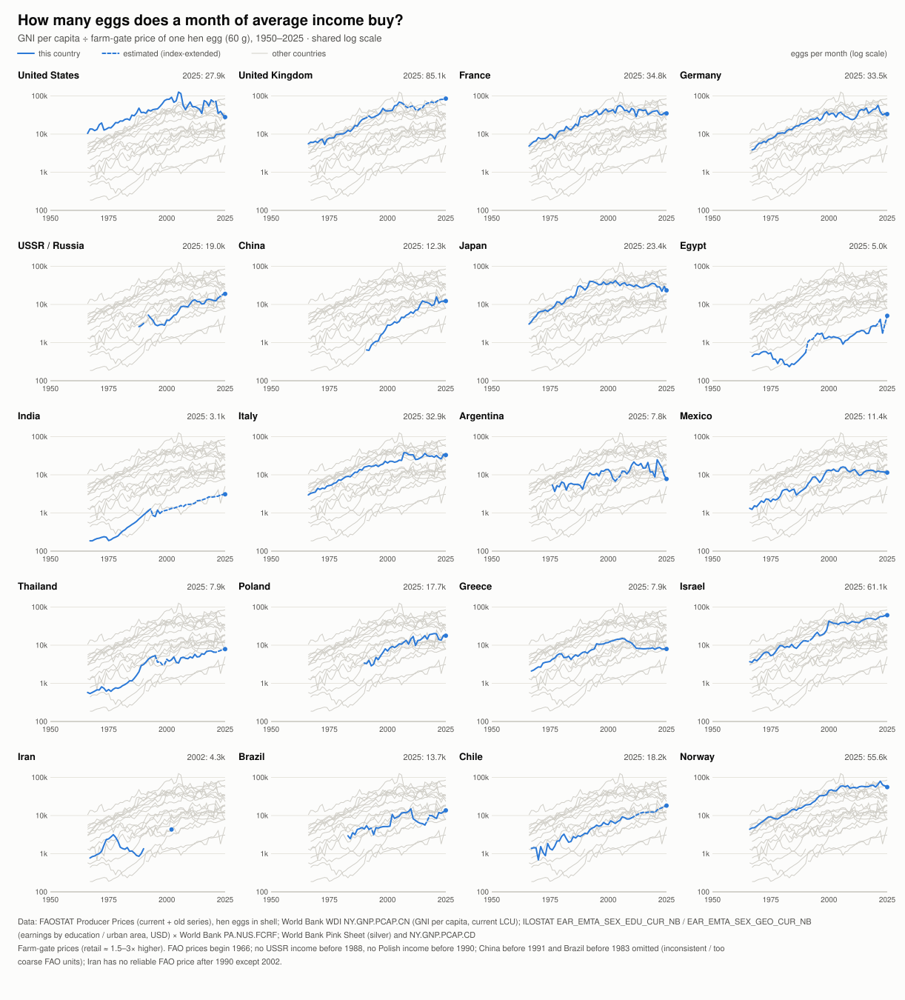
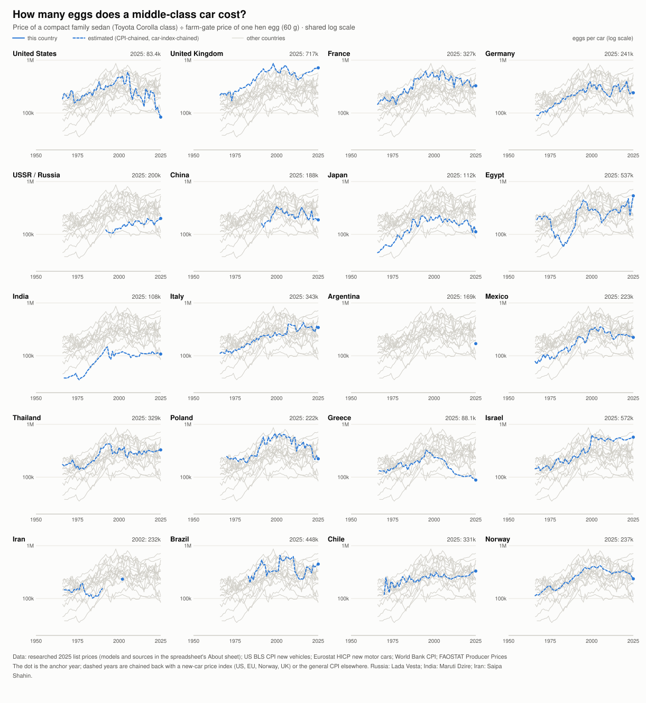
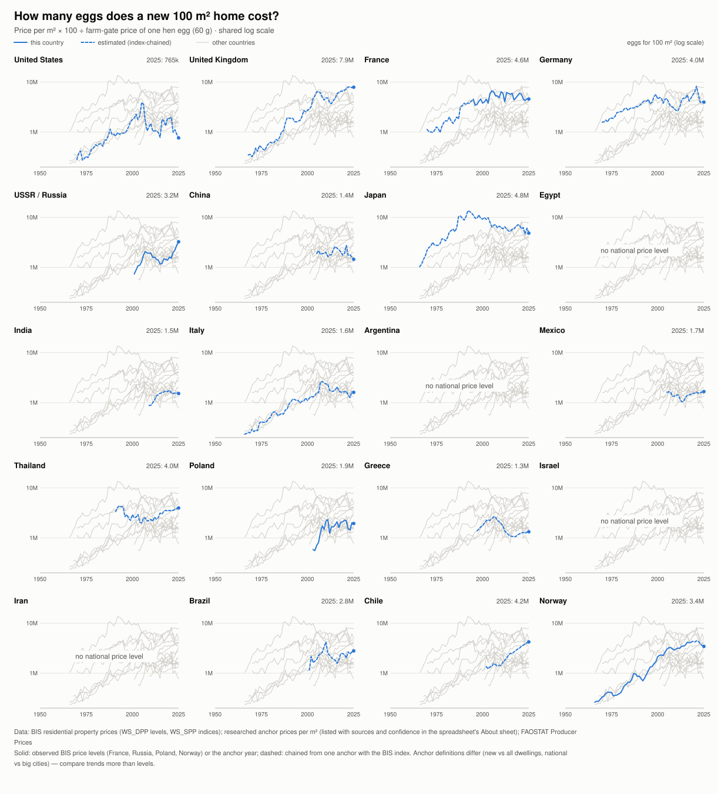
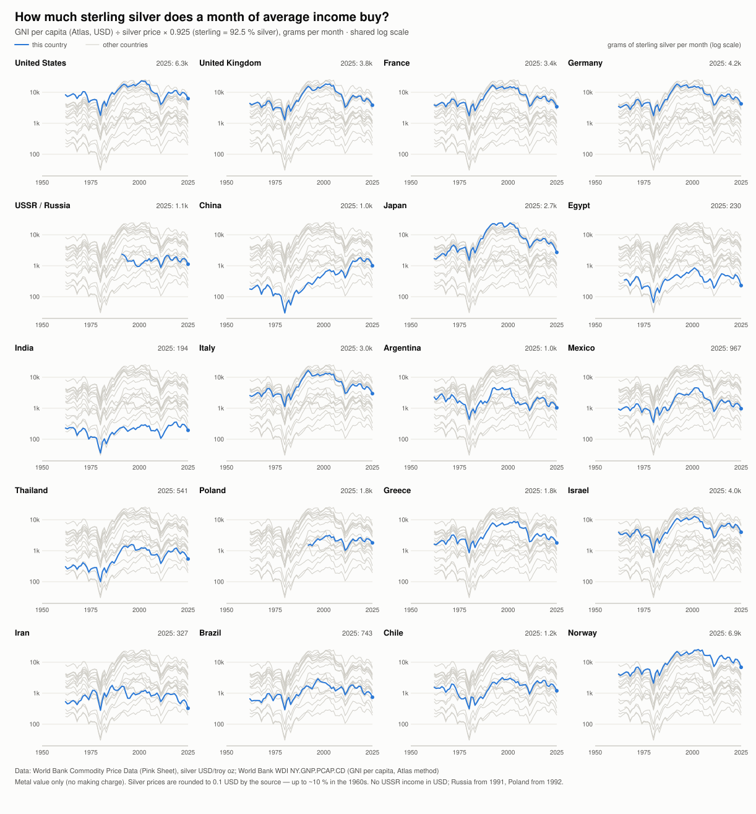
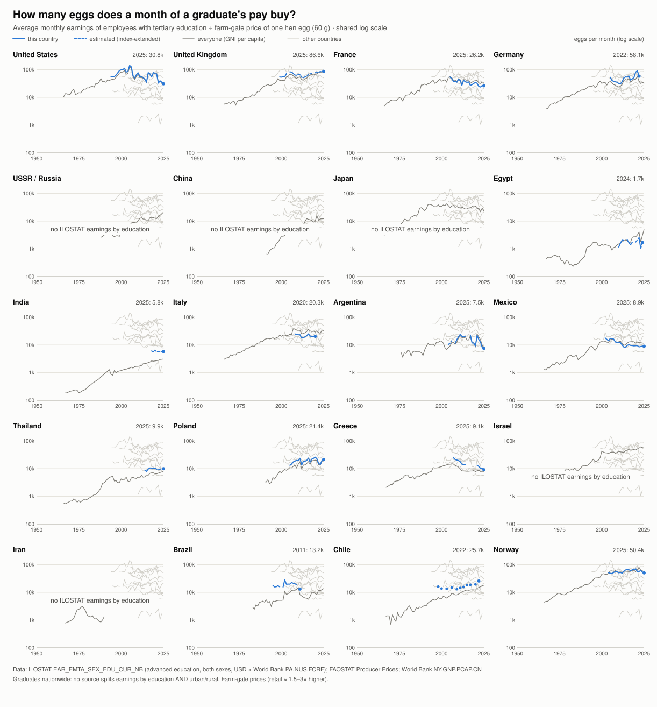
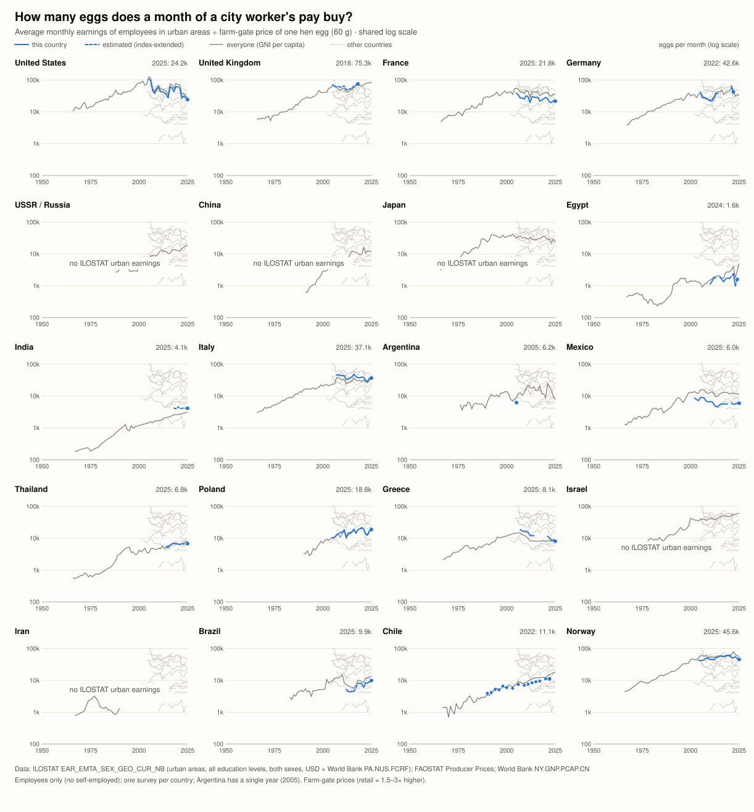

For seventy years the hen's egg has been the same object in Washington, Cairo and Bangkok. That makes it a rare yardstick: price income, homes, cars and silver in eggs and you can compare 1966 with 2025, and India with Norway, without exchange rates or inflation adjustments. Here is what the seven charts say about the world economy.
In the median country, one month of average income bought 4,136 eggs around 1970, 12,069 around 2000 and 16,592 in 2024. That fourfold gain is a measure of farm productivity as much as of income. Industrial poultry, cheap feed grain and refrigerated logistics turned the egg from a luxury into the cheapest animal protein on earth.
The gains were largest where incomes started lowest. Between 1970 and 2024 egg purchasing power rose 25× in Chile, 14× in India and 11× in Thailand, against 4.4× in France and 2.4× in the United States. China went from 640 eggs a month in 1991 to over 12,000.

In 1970 the best-placed country (the United States) bought 64 times as many eggs per month as the worst (India). By 2024 the ratio between top and bottom was 27. The middle of the distribution compressed even more: the ratio between the 75th and 25th percentile countries fell from 6.3 to 2.8.
The ranking at the top, however, held. Norway, the United States, Britain and Western Europe stayed above everyone else for the whole period. The countries that climbed were in East Asia and Eastern Europe: China, Thailand and Poland moved from the bottom third toward the middle. India and Egypt remain at the bottom of every chart that includes them.
| Eggs per month, average income | 1970 | 1990 | 2010 | 2024 |
|---|---|---|---|---|
| Median of the countries with data | 4,136 | 5,512 | 13,395 | 16,592 |
| Richest ÷ poorest country | 64× | 67× | 36× | 27× |
| 75th ÷ 25th percentile | 6.3× | 6.3× | 3.9× | 2.8× |
Most advanced economies peaked between 2003 and 2007 and are now below that level. Measured against its peak year, the United States stands at 22%, Greece at 53%, Japan at 56%, Germany at 59% and France at 62%. Three forces combine:
The countries still at a record in 2025 are almost all catching up from lower levels: India, Egypt, Thailand, Chile and Russia. Britain and Israel are the exceptions among rich countries.
Price a compact family car (a Toyota Corolla or its local equivalent) in months of average income, and it got cheaper in every country, without exception. This is what global supply chains, automation and competition among carmakers bought ordinary households.
| Months of average income for a car | 1970 | 1990 | 2005 | 2024 |
|---|---|---|---|---|
| United States | 15.2 | 7.7 | 4.6 | 3.1 |
| Japan | 9.9 | 5.7 | 5.4 | 4.9 |
| Germany | 18.6 | 11.0 | 9.4 | 7.2 |
| United Kingdom | 35.9 | 22.7 | 11.6 | 8.5 |
| Poland | — | 114.5 | 58.5 | 14.2 |
| China | — | — | 68.6 | 16.0 |
| Chile | 172.5 | 66.5 | 34.5 | 18.9 |
| India | 188.6 | 122.1 | 73.9 | 36.8 |
| Thailand | 272.8 | 111.0 | 68.9 | 42.6 |
| Egypt | 391.8 | 262.6 | 191.2 | 120.1 |
A car is also the most equal of all the measures. Across countries, the egg price of a car varies only about 6×, and has for fifty years, while income in eggs varies 27×. A car is traded on world markets, so its price converges. Eggs, wages and land are local, so theirs do not.

Measured in years of average income, a 100 m² home cost about the same in 2024 as a generation ago, or more. France is the clearest case: 10.6 years in 1975, 10.8 in 2024, through two property booms. Britain went from 5.2 to 7.9 years, Norway from 3.7 to 5.0, Poland from 5.4 (2005) to 9.3.
It fell only where a bubble burst or incomes outran everything: Japan from about 31 years in 1975–1990 to 17, Germany from 21 to 10, China from 44 (2005) to 11. A car factory can double its output; a city cannot double its land. As incomes rose, buyers bid more for the same location, so income gains were absorbed into land prices instead of making homes cheaper.
| Years of average income for 100 m² | 1975 | 1990 | 2005 | 2024 |
|---|---|---|---|---|
| France | 10.6 | 10.4 | 10.0 | 10.8 |
| United Kingdom | 5.2 | 6.2 | 7.7 | 7.9 |
| Norway | 3.7 | 3.8 | 4.3 | 5.0 |
| Poland | — | — | 5.4 | 9.3 |
| Germany | 21.1 | 14.3 | 10.4 | 9.9 |
| Japan | 31.3 | 30.8 | 17.2 | 17.4 |
| China | — | — | 43.7 | 11.0 |
| India | — | — | — | 42.7 |
Level comparisons between countries are rough: the anchor prices mix new and existing dwellings, national and big-city figures. Trends within a country are more reliable. The US figure (about 2.4 years) uses the median new single-family house including land.

Average monthly income in the median country bought 2.2 kg of sterling silver in 1970 and 2.0 kg in 2024. In between it collapsed to 0.65 kg in 1980, the year of the silver spike, climbed to nearly 4 kg around 2000 when silver sat near $5 an ounce, and fell again in the 2011 and 2025 rallies.
Incomes multiplied many times over in dollar terms, and silver kept pace with them. Unlike eggs or cars, silver is not made cheaper by productivity: it is a store of value whose price rises with money and wealth. The silver charts also show the clearest single global event in the data. Every country dips in 1980 at the same moment, because the silver price is one world price.

Comparing employees with tertiary education to all urban employees in the same national survey, a graduate earns 2.3× as much in Chile, 1.5× in Mexico and Thailand, 1.4× in India, 1.3× in the United States and 1.1× in Norway. Education pays most where educated workers are scarce.
In nearly every country the premium narrowed over the last twenty years: Mexico from 2.05× to 1.50×, France from 1.43× to 1.21×, Poland from 1.33× to 1.14×, Greece from 1.31× to 1.13×. Germany is the exception (1.27× to 1.36×). As higher education became common, a degree became less of a scarcity and more of an entry ticket.


Italy and the UK are left out of the premium comparison because their graduate and urban figures come from different surveys. The reference line in these charts is GNI per capita, not take-home pay, so graduate lines below it (France, Mexico) reflect that definitional gap rather than graduates earning less than average.
The egg yardstick records national crises clearly:
Over the last 35 years the gap between rich and developing countries narrowed faster than at any time in the data. Income per head in US dollars grew 41× in China, 10× in Poland, 6.8× in Chile and 6.5× in India, against 3.4× in the United States, 2.2× in France and 1.3× in Japan. The data shows the outcome; the causes below come from the economic history of the period, and each one leaves a mark in the charts.
| 1990 → 2024 | Income per head, USD | Growth | Eggs per month | Growth |
|---|---|---|---|---|
| China | 330 → 13,660 | 41× | 643 → 12,166 | 19× |
| Poland | 2,080 → 21,590 | 10× | 3,391 → 17,999 | 5.3× |
| Chile | 2,340 → 15,840 | 6.8× | 3,452 → 17,190 | 5.0× |
| India | 390 → 2,550 | 6.5× | 892 → 3,035 | 3.4× |
| Russia | 3,440 → 15,330 | 4.5× | 3,179 → 18,397 | 5.8× |
| Thailand | 1,540 → 7,130 | 4.6× | 3,108 → 7,599 | 2.4× |
| Argentina | 3,180 → 13,530 | 4.3× | 6,608 → 9,628 | 1.5× |
| United States | 24,060 → 82,910 | 3.4× | 37,151 → 31,850 | 0.9× |
| Japan | 28,990 → 37,170 | 1.3× | 23,924 → 29,318 | 1.2× |
Income is GNI per capita, Atlas method (Poland from 1992, Russia from 1991, China's eggs from 1991). Egg growth is lower than dollar growth where egg prices rose with development or the currency gained against the dollar.
Within three years the world's largest closed economies opened. China deepened its market reforms in 1992, Poland and the rest of Central Europe left central planning in 1990, the Soviet Union dissolved in 1991, and India's balance-of-payments crisis that year forced the end of its licence system and high tariffs. Hundreds of millions of workers joined the world market at once. In the charts, China's and Poland's lines begin their steep climbs just after these dates.
The Uruguay Round created the WTO in 1995, China joined it in 2001, tariffs fell worldwide, and container shipping made distance cheap. Manufacturing moved to where labour cost less, bringing foreign investment, factory jobs and know-how. The car chart is the clearest trace: a car fell from 115 to 14 months of income in Poland (1990–2024), from 69 to 16 in China (2005–2024) and from 111 to 43 in Thailand. All three became major car producers inside global supply chains.
A follower country can adopt technology far more cheaply than the leader invented it. Mobile phones skipped the landline era, and modern farming spread fast. The egg itself is an example: industrial poultry, with improved breeds, compound feed and cold chains, reached China, India and Thailand in the 1990s and 2000s. That is a large part of why eggs became affordable fastest where people were poorest.
In the 1980s many developing economies lived with triple- or quadruple-digit inflation. That decade ended with Poland's 1990 stabilisation, Argentina's 1991 convertibility plan, Brazil's 1994 Real Plan and Mexico's recovery after 1995, followed by independent central banks targeting inflation (Chile 1990, Poland 1998, Brazil 1999, Thailand 2000, Mexico 2001). Our own sources show the change: FAO's price series for Mexico, Poland and Brazil are full of currency switches and redenominations before the mid-1990s, and stable afterwards. Predictable money made long-term investment and saving possible again.
China's industrialisation pulled up the prices of copper, iron ore, oil and soybeans, and exporters of those goods boomed. Russia's egg purchasing power more than tripled between 2000 and 2012 (3,900 to 13,200 eggs a month). Brazil peaked in 2010 and Chile kept climbing on copper. The end of the cycle is visible too: Russia dipped after the 2014–15 rouble crash and Brazil fell back from its 2010 peak.
Workers moved from low-productivity farming into urban factories and services; China went from about a quarter urban in 1990 to about two thirds today. Falling birth rates left a large working-age generation with fewer dependants, and mass schooling made skills abundant. The graduate premium in our data shrank accordingly: from 2.05× to 1.50× in Mexico and from 1.33× to 1.14× in Poland. More graduates competing for jobs is a sign of development.
For Central Europe, the prospect of EU membership, and from 2004 the single market and structural funds, imported institutions as well as investment. Poland's income in dollars grew tenfold. For developing economies generally, low world interest rates in the 2000s and 2010s made foreign capital cheap.
The same tailwinds blew for everyone, and the results differed. Argentina's dollar income grew 4.3×, but its egg purchasing power only 1.5×, through the 2001 default and repeated bouts of inflation and devaluation. Iran's dollar income only doubled under sanctions. Egypt gained 5.5× in eggs but from the lowest base in the set, with growth interrupted by the 2016 and 2023 devaluations. Greece, already rich in 1990, lost a decade to its debt crisis. The countries that converged combined openness to trade with stable money and lasting reforms. Openness alone, as Argentina shows, was not enough.
First, what these data cannot do: give a date. Seventy annual readings contain only a handful of global crises, and crises arrive when debts, policy and confidence break together, which a yardstick of prices cannot time. What the data can do is show where today's readings sit against their own history, and what followed the last time they were there. Four readings stand out in 2025–26.
In 2025 a month of average income in the median country bought 1.49 kg of sterling silver, the 12th percentile of 65 years. Silver then averaged $72 an ounce over January–October 2026, against $39.8 in 2025. Unless incomes jump, 2026 will come in near 0.9 kg, the second-lowest reading on record. The only lower years cluster around two dates: 1979–83 and 2011–12.
| Silver trough | Median g/month at the trough | Four to five years later | What was happening |
|---|---|---|---|
| 1980 | 649 | 1,884 (1985) | Double-digit inflation, Volcker's interest-rate shock, recessions of 1980–82, Latin American debt crisis of 1982 |
| 2011 | 986 | 2,445 (2015) | After the 2008 crisis: euro-area debt crisis, US credit downgrade, emergency money printing |
| 2026 (est.) | ≈ 890 | — | Silver peaked at $92 in January 2026 and fell to $57 by October |
Both earlier extremes were moments of fear about money and debt, when people bought metal to protect their savings. Both were followed by a fall in the silver price and a recovery of silver purchasing power by 2.5–3× within about five years. The 2026 fall from $92 to $57 has the same shape as the 1980 and 2011 unwinds. Two cases are a pattern, not a law.
Years of average income needed for a 100 m² home, measured against each country's own history:
| Stretched (above 3 in 4 past years) | Years now | Cheap (below 1 in 4 past years) | Years now |
|---|---|---|---|
| Mexico (record) | 12.1 | China | 9.9 (peak 43.7 in 2005) |
| Norway | 5.1 | Italy | 4.1 |
| United States | 2.3 | India | 41.1 |
| United Kingdom | 7.7 | Germany | 9.9 |
| Chile | 19.4 | Thailand | 41.9 |
In this data set, a country's own housing peak has repeatedly come shortly before its crisis: Japan before 1990, the United States in 2005 before 2008, Greece in 2006 before 2010, Russia in 2007 before 2008–09, Brazil in 2012 before its 2015–16 recession. Mexico, Norway, the United States, Britain and Chile are near their own highs now. China is the opposite case: its housing has already deflated to the cheapest level in its record, so its property crisis is under way rather than ahead.
From 2020 to 2025 the farm price of an egg rose faster than income in the United States (×3.5 against ×1.38), Japan (×1.84 against ×1.26), Germany (×1.76 against ×1.30) and France (×1.46 against ×1.26). In most developing countries income won: Egypt (income ×2.68, eggs ×1.44), Russia, Brazil, Chile and China. Rich-country households feel poorer in everyday goods even where official income rose. That kind of squeeze fuels political pressure more than it predicts recessions.
Between 2014 and 2024 a car got cheaper in months of income in every country: Poland 29 to 14, China 27 to 16, India 52 to 37, Egypt 146 to 120. Manufacturing productivity, now led by Chinese factories, is still exporting lower prices to the world. And in 2025 egg purchasing power hit a record in India, Egypt, Thailand, Chile and Russia, while the United States, Japan, France and Germany sit well below their peaks.
These are judgments built on the readings above, not forecasts, and not investment advice.
| Signal | Now | What a change would mean |
|---|---|---|
| Silver purchasing power (median g/month) | ≈ 890 (2026 est.) | A rebound toward 1,800–2,000 g, as after 1980 and 2011, means the fear trade has unwound |
| Years of income for 100 m², US / UK / Norway | 2.3 / 7.7 / 5.1 | A turn down from these highs has preceded crises before; a flat plateau is the benign case |
| Eggs per month, US / Japan / France | 22% / 56% / 62% of peak | Rising again would be the first sign of a rich-world productivity revival |
| Months of income for a car, India / Egypt | 37 / 120 | Continued falls mean convergence is still working |
The silver estimate for 2026 uses the World Bank's January–October 2026 monthly average ($71.8/oz) and 2025 incomes grown by the 2024–25 median (7.4%). Housing positions use each country's own series, so they say nothing about which country is expensive in absolute terms.
Every number in this report was produced by datavibes, an open, config-driven Python toolkit for building datasets. Nothing was edited by hand in a spreadsheet. The whole study is one file, datasets/egg-purchasing-power/dataset.yaml, which declares four things:
One command, datavibes run egg-purchasing-power, fetches everything, processes it and writes all outputs with one shared timestamp. Several properties make the results checkable:
price_basis, house_price_basis, car_price_basis: observed, archive-rebased, index-chained, anchor), and every anchor row carries its source and confidence.EGG_WEIGHT_GRAMS=50 datavibes run egg-purchasing-power reruns the study with 50 g eggs.Because the study is a declaration rather than a one-off script, extending it is mostly editing YAML. The building blocks written for this report (FAO, ILO, BIS, BLS and World Bank sources; index chaining; the spreadsheet and small-multiples writers) are reusable by any other dataset.
item) prices everything in rice, wheat, milk or chicken. Comparing several yardsticks would separate what is specific to eggs from what is general.APU0000708111, already reachable through the BLS source) would measure the shop price directly.datavibes new my-study --category economy creates a dataset folder with a working dataset.yaml.docs/reference.md. A source the toolkit does not cover yet is a small Python class registered by name.datavibes validate my-study checks the configuration; datavibes run my-study produces the outputs; a cron line makes it a living dataset.datavibes is released under the Business Source License 1.1: free to use for research, evaluation and non-commercial work, and for production use by organisations with annual revenue below the value of one bitcoin. The underlying data keep their own licences (FAOSTAT CC BY-NC-SA 3.0 IGO, World Bank and ILOSTAT CC BY 4.0, BIS, BLS and Eurostat terms).